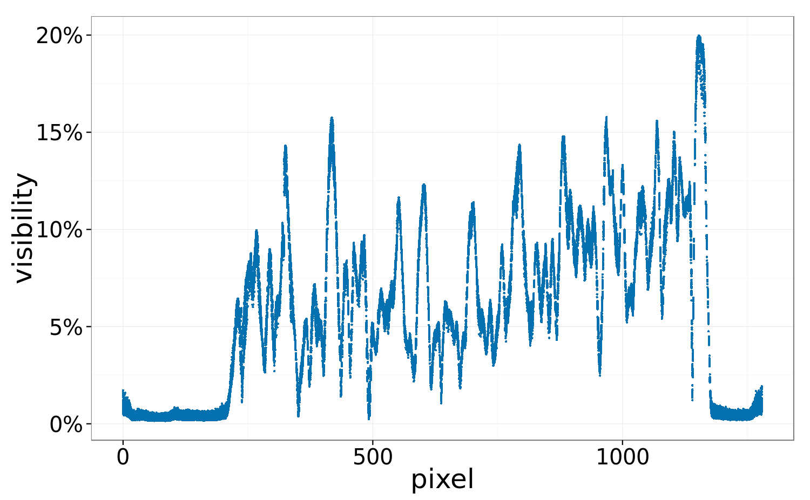

Quantitative high-energy phase measurements
High-energy ratio independent of the material
Progress towards the new setup
- gratings
- source
- motors
- detector
Grating fabrication at KIT
Detailed progress on the issue trackerFirst overplated mask (June)
Second mask, wrong duty cycle (August)
First irradiation attempt (October)
The resist is too sensitiveNew 225 kV source
- source
- high-voltage generator
- controller
- authorization
Mythen detector
- energy threshold >20 keV
- special module with fan geometry
- 24 bits (was 16)
- 50 µm pixel size (was 80µm)
- More about the SNR in Maria's report
Improved visibility by 50%
average from 5% to 7.5%

Improved visibility by 50%
average from 5% to 7.5%
Quantitative phase experiments
- noise: is \(\sigma_P\) reliable?
- signal: can we measure \(\delta\)?
Wedge samples
Constant differential phase value proportional to \(\delta\)
- PMMA - Polymethyl methacrylate
- PS - Polystyrene
- HDPE - High-density polyethylene


\(R \approx 2\)
Noise properties of the phase
\[\begin{align*}
\sigma_P &= \frac{2}{v_0\sqrt{N_0}}\\
\end{align*} \]
\[\begin{align*}
v &= \text{visibility}\\
N &= \text{number of photons}\\
_0 &= \text{without sample}
\end{align*} \]
\[ \sigma_P = 2(v_0 \sqrt{N_0})^{-1}\]
\[\text{prediction error} = \frac{\sigma_\text{predicted} - \sigma_\text{observed}}{\sigma_{\text{predicted}}}\]
Measuring \( \delta \)
geometrical inputs + measured dpc value P:
\[ \delta = \frac{2 \pi p \tan \theta}{D}P \]
| \( p \) | period of the grating |
| \( D \) | distance \(G_1-G_2\) |
| \( \theta \) | wedge angle |
| \( P \) | measured DPC value |
Absolute \( \delta \)
| material | NIST table \( \delta (\cdot 10^{-9}) \) | experimental \( \delta (\cdot 10^{-9}) \) |
|---|---|---|
| PMMA | \(102\) | \(92 \pm 19\) |
| PS | \(90\) | \(81 \pm 21\) |
| HDPE | \(88\) | \(87 \pm 14\) |
No fit, no calibration, real absolute experimental values!
theoretical values for an energy of 50 keV, which is the average of the simulated spectrum
Relative \( \delta \)
Accounts for energy calibration, universally used in publications
| material | NIST table \( \delta/\delta_\text{PMMA} \) | experimental \( \delta/\delta_\text{PMMA} \) |
|---|---|---|
| PS | \(0.89\) | \(0.88 \pm 0.30\) |
| HDPE | \(0.87\) | \(0.95 \pm 0.25\) |
Note the large uncertainty, even after 50 hours exposure per sample
Conclusions
New setup
- only official authorization is missing
- excellent performance of the new motors and detector
- gratings still unavailable
Noise: sensitivity prediction
- no free parameters, reasonable agreement within 50%
- important constraints for applications
- missing link \(R \leftrightarrow \) geometry and energy
- \(R < \text{ or } > 1 \) should be particularly important
Signal: quantitative phase
- very good agreement, even without calibration
- measurement requires many long exposures